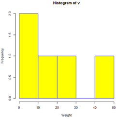
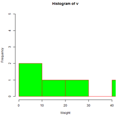

A histogram represents the frequencies of values of a variable bucketed into ranges. Histogram is similar to bar chat but the difference is it groups the values into continuous ranges. Each bar in histogram represents the height of the number of values present in that range.
R creates histogram using hist() function. This function takes a vector as an input and uses some more parameters to plot histograms.
Syntax
The basic syntax for creating a histogram using R is –
hist(v,main,xlab,xlim,ylim,breaks,col,border)
Following is the description of the parameters used –
1. v is a vector containing numeric values used in histogram.
2. main indicates title of the chart.
3. col is used to set color of the bars.
4. border is used to set border color of each bar.
5. xlab is used to give description of x-axis.
6. xlim is used to specify the range of values on the x-axis.
7. ylim is used to specify the range of values on the y-axis.
8. breaks is used to mention the width of each bar.
Example
A simple histogram is created using input vector, label, col and border parameters.
The script given below will create and save the histogram in the current R working directory.
# Create data for the graph.
v <- c(9,13,21,8,36,22,12,41,31,33,19)
# Give the chart file a name.
png(file = "histogram.png")
# Create the histogram.
hist(v,xlab = "Weight",col = "yellow",border = "blue")
# Save the file.
dev.off()
When we execute the above code, it produces the following result −

Range of X and Y values
To specify the range of values allowed in X axis and Y axis, we can use the xlim and ylim parameters.
The width of each of the bar can be decided by using breaks.
# Create data for the graph.
v <- c(9,13,21,8,36,22,12,41,31,33,19)
# Give the chart file a name.
png(file = "histogram_lim_breaks.png")
# Create the histogram.
hist(v,xlab = "Weight",col = "green",border = "red", xlim = c(0,40), ylim = c(0,5),
breaks = 5)
# Save the file.
dev.off()
When we execute the above code, it produces the following result −
